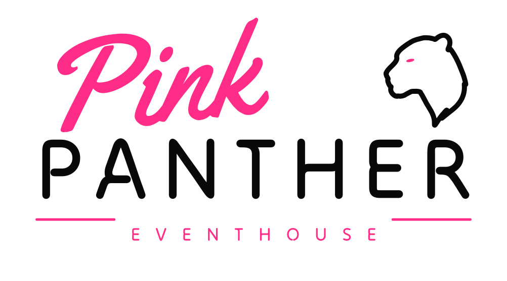
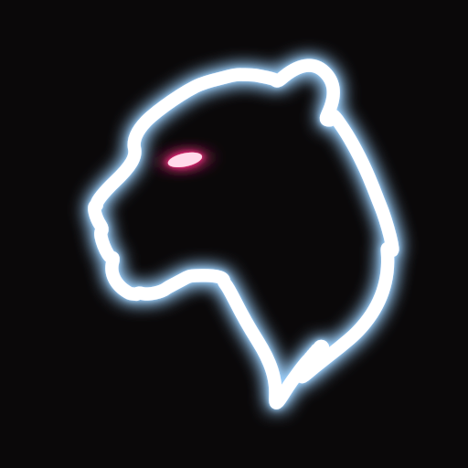
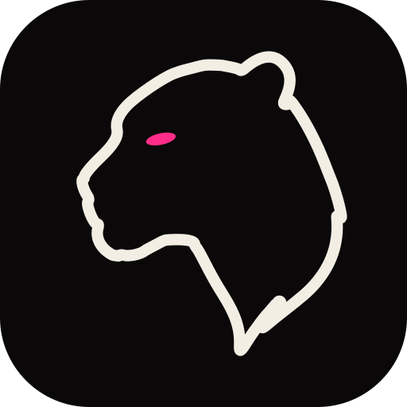

02 · Celostna grafična podoba
Neon, kot pravi klub
Logotip je narejen kot pravi neon napis: rožnat pisan »Pink«, bel »PANTHER«, rožnat »EVENTHOUSE« in glava panterja iz ene bele cevi z rožnatim očesom. Vsak element ima prižgano izvedbo (za tablo in video) in tiskano izvedbo brez sija (za tisk in dokumente).
Prižgan · neontabla na steni, video, naslovnice
Tisk na temnemplakati, kartice, majice

Tisk na svetlemdokumenti, računi, ceniki

Panter · neonstrešna tabla, profilna slika
Napis brez panterjaglava spletne strani, podpisi

Ikonafavicon, aplikacija, zapestnica
Barve
Night
- HEX
- #0A0809
- CMYK
- 60 50 50 100
- Vloga
- ozadje
Neon Pink
- HEX
- #FF2D87
- CMYK
- 0 90 15 0
- Pantone
- ≈ 806 C
Tube Pink
- HEX
- #FFD9EA
- Vloga
- sredica prižgane cevi
Ice White
- HEX
- #EAF6FF
- Sij
- #9FD3FF
- Vloga
- bela cev
Ivory
- HEX
- #F3EEE4
- CMYK
- 3 4 9 0
- Vloga
- besedilo, tisk
Pisave
Yellowtail
Poudarki: »Pink«, imena večerov, kratke besede. Vedno rožnata.
TILT NEON
Naslovi, datumi, napisi. Vedno z velikimi črkami.
Inter za besedilo
Opisi, cenik, spletna stran, podnapisi v reelsih.
Pravilo: na eni objavi največ ena rožnata pisana beseda, vse drugo belo ali slonokoščeno. Rožnata na rdeči fasadi je prepovedana, tam svetijo samo cevi.